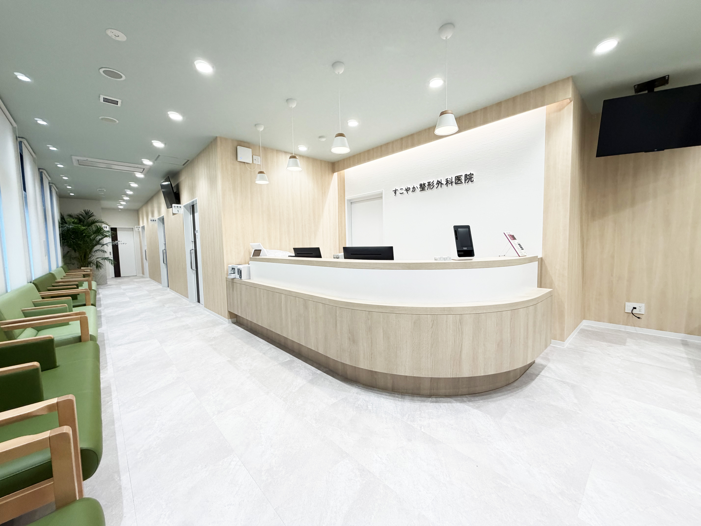

すこやか整形外科医院では、院長をはじめ、
看護師、医療事務、診療放射線技師、その他スタッフが
チーム一丸となって患者様の健康をサポートいたします。
専門スタッフがチームでサポート

在籍スタッフ
各分野の専門スタッフがチームで対応します
骨粗鬆症マネージャー
二次性骨折予防継続管理料3 算定骨粗鬆症による骨折予防を専門知識を持つスタッフがサポートします。
骨密度検査から治療、生活指導まで一貫して対応いたします。
防災士
災害時でも継続できる医療を災害時の対応と「もしもの備え」を大切にしています。
地域の医療拠点として皆様の安心を支え続けます。
看護師
診療の補助から患者様のケアまで、安心して治療を受けていただけるようサポートいたします。
注射や処置、健康相談など幅広く対応します。
診療放射線技師
MRI・レントゲン検査など、正確な画像診断をサポートします。
安全に配慮しながら、質の高い検査を提供いたします。
医療事務
受付から会計まで、患者様が気持ちよく通院できるよう笑顔でお迎えします。
ご不明点があればお気軽にお声がけください。
その他スタッフ
清掃や院内環境の整備など、患者様が快適に過ごせる空間づくりをサポートしています。
スタッフ一同、
心よりお待ちしております
すこやか整形外科医院では、スタッフ一同、
患者様のご来院を心よりお待ちしております。
お身体のことでお困りのことがございましたら、
どうぞお気軽にご相談ください。